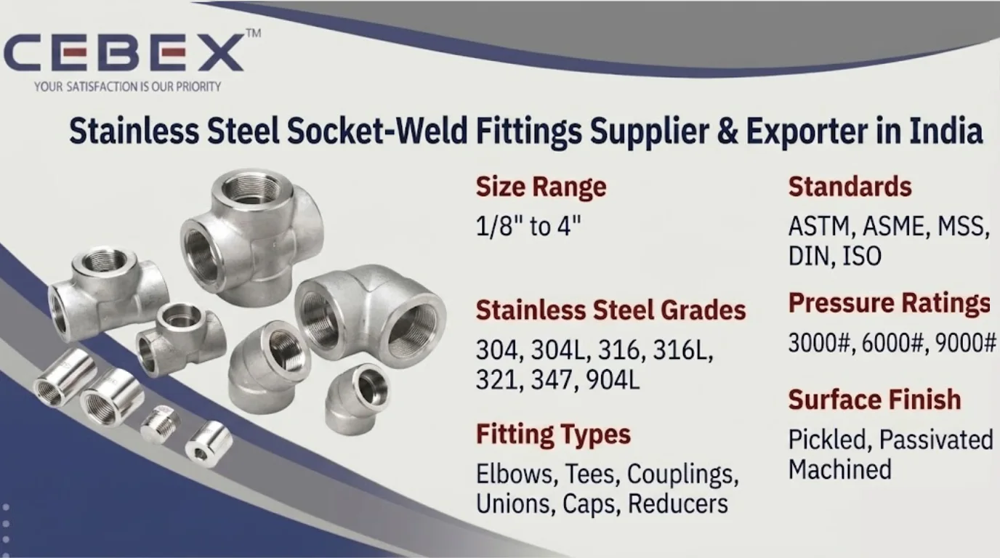

Leading Supplier & Exporter of Stainless Steel Socket-Weld Fittings
Stainless Steel Socket-Weld Fittings are extensively used in high-pressure piping systems, petrochemical industries, oil & gas plants, power generation facilities, chemical processing industries, refineries, marine engineering, and industrial process systems because of their excellent pressure handling capability, superior corrosion resistance, leak-proof joint integrity, and long operational life. As a leading Stainless Steel Socket-Weld Fittings Supplier & Exporter in India, CEBEX STEEL INDIA supplies premium-quality stainless steel socket weld fittings manufactured according to international ASTM, ASME, DIN, MSS, and ISO standards for critical industrial piping applications.
Our Stainless Steel Socket-Weld Fittings are widely utilized in steam lines, process piping systems, hydraulic systems, offshore platforms, pressure systems, heat exchangers, refinery plants, and industrial fluid transfer applications where reliable welded connections and superior corrosion protection are essential. We supply stainless steel socket weld elbows, tees, couplings, unions, reducers, caps, bosses, cross fittings, and custom piping components according to industrial project specifications and international engineering standards.
As experienced traders and exporters of Stainless Steel Socket-Weld Fittings in India, we provide piping solutions suitable for demanding industrial environments requiring compact installation, high-pressure sealing performance, vibration resistance, and dependable long-term service performance.
At CEBEX STEEL INDIA, we utilize advanced forging, machining, threading, heat treatment, and precision finishing technologies to supply Stainless Steel Socket-Weld Fittings with excellent dimensional accuracy, smooth bore finish, and dependable mechanical performance. Our products are trusted by EPC contractors, fabrication industries, process industries, engineering companies, infrastructure developers, and industrial buyers across India, Africa, the Middle East, Europe, and Southeast Asia.

Selecting the right Stainless Steel Socket-Weld Fittings supplier is essential for ensuring pressure integrity, dimensional precision, weldability, corrosion resistance, and long-term operational reliability. CEBEX STEEL INDIA has established itself as a trusted Stainless Steel Socket-Weld Fittings Supplier & Exporter in India through strong metallurgical expertise, strict quality control systems, and dependable worldwide export capabilities.
We maintain complete traceability from raw material procurement to finished fitting dispatch and provide all materials with EN 10204 3.1/3.2 Mill Test Certificates, inspection reports, and export documentation. Our in-house quality department performs comprehensive inspection procedures including chemical analysis, PMI testing, dimensional inspection, hydrostatic testing, hardness testing, pressure testing, and surface quality verification to ensure compliance with ASTM and customer project specifications.
Our export logistics team efficiently manages seaworthy packaging, export documentation, and international shipping for smooth global deliveries.
Our Stainless Steel Socket-Weld Fittings are manufactured using premium-quality stainless steel raw materials sourced from approved mills and processed through advanced forging and machining technologies to ensure superior corrosion resistance, dimensional precision, and mechanical durability.
| Feature | Specification / Detail |
|---|---|
| Standards | ASTM, ASME, MSS, DIN, ISO |
| ASTM Specifications | ASTM A182, ASTM A403 |
| ASME Standards | ASME B16.11 |
| MSS Standards | MSS SP-79, MSS SP-83, MSS SP-95 |
| Stainless Steel Grades | 304, 304L, 316, 316L, 321, 347, 904L |
| Pressure Ratings | 3000#, 6000#, 9000# |
| Size Range | 1/8" to 4" |
| Fitting Types | Elbows, Tees, Couplings, Unions, Caps, Reducers |
| Manufacturing Process | Forged, CNC Machined, Heat Treated |
| Surface Finish | Pickled, Passivated, Machined |
| Documentation | EN 10204 3.1/3.2, MTC, Inspection Reports |
We supply a comprehensive range of Stainless Steel Socket-Weld Fittings suitable for high-pressure and high-temperature industrial piping systems. Our product range includes 90 degree socket weld elbows, 45 degree elbows, equal tees, reducing tees, full couplings, half couplings, reducing couplings, unions, caps, crosses, branch outlets, bosses, and forged socket weld fittings for critical process applications.
We also supply customized forged fittings according to customer drawings, process piping requirements, and industrial project specifications.
Material selection plays a critical role in determining corrosion resistance, pressure handling capability, weldability, and service life. We supply Stainless Steel Socket-Weld Fittings in internationally approved grades suitable for highly demanding industrial operating environments.
| Stainless Steel Grade | UNS Number | Typical Applications | Standards |
|---|---|---|---|
| SS 304 | S30400 | General Industrial Piping | ASTM A182 |
| SS 304L | S30403 | Welding & Chemical Processing | ASTM A182 |
| SS 316 | S31600 | Marine & Offshore Applications | ASTM A182 |
| SS 316L | S31603 | Petrochemical & Process Industries | ASTM A182 |
| SS 321 | S32100 | High Temperature Systems | ASTM A182 |
| SS 347 | S34700 | Boiler & Pressure Equipment | ASTM A182 |
| SS 904L | N08904 | Highly Corrosive Environments | ASTM A182 |
All materials are sourced from reputed mills and supplied with complete traceability, inspection reports, and EN 10204 3.1/3.2 Mill Test Certificates.
Every Stainless Steel Socket-Weld Fitting supplied by CEBEX STEEL INDIA includes complete chemical composition and mechanical property reports to ensure compliance with international standards and industrial project requirements.
| Element | Composition (%) |
|---|---|
| Chromium (Cr) | 18.0 – 20.0 |
| Nickel (Ni) | 8.0 – 10.5 |
| Carbon (C) | 0.08 Max |
| Manganese (Mn) | 2.0 Max |
| Silicon (Si) | 1.0 Max |
| Iron (Fe) | Balance |
| Property | Value |
|---|---|
| Tensile Strength | 515 MPa Min |
| Yield Strength | 205 MPa Min |
| Elongation | 40% Min |
| Hardness | 92 HRB Max |
| Element | Composition (%) |
|---|---|
| Chromium (Cr) | 16.0 – 18.0 |
| Nickel (Ni) | 10.0 – 14.0 |
| Molybdenum (Mo) | 2.0 – 3.0 |
| Carbon (C) | 0.08 Max |
| Iron (Fe) | Balance |
| Property | Value |
|---|---|
| Tensile Strength | 515 MPa Min |
| Yield Strength | 205 MPa Min |
| Elongation | 40% Min |
| Hardness | 95 HRB Max |
Our quality department conducts spectrographic analysis, hardness testing, tensile testing, PMI testing, hydrostatic testing, and dimensional verification using calibrated inspection equipment.
We manufacture and supply Stainless Steel Socket-Weld Fittings according to internationally approved ASME and MSS standards to ensure interchangeability, pressure integrity, and industrial compatibility.
| Standard | Description |
|---|---|
| ASME B16.11 | Forged Socket Weld & Threaded Fittings |
| MSS SP-79 | Socket Weld Reducer Inserts |
| MSS SP-83 | Socket Weld Unions |
| MSS SP-95 | Swage Nipples & Bull Plugs |
| Pressure Class | Application |
|---|---|
| 3000# | Standard Process Piping |
| 6000# | High Pressure Systems |
| 9000# | Critical High Pressure Applications |
Stainless Steel Socket-Weld Fittings provide excellent resistance to atmospheric corrosion, moisture exposure, chemicals, seawater environments, and aggressive industrial operating conditions. Austenitic stainless steel grades such as SS 304 and SS 316 offer exceptional corrosion resistance and dependable performance for industrial piping systems.
SS 316 and SS 316L socket weld fittings provide improved chloride corrosion resistance because of their molybdenum content, making them highly suitable for offshore platforms, desalination plants, marine engineering, and highly corrosive chemical processing applications.
Socket-weld fittings also provide compact installation, superior vibration resistance, leak-proof welded joints, and high-pressure handling capability in demanding process systems.
Our Stainless Steel Socket-Weld Fittings are extensively used in industries requiring reliable high-pressure piping connections, corrosion resistance, and long operational life. Oil & gas industries utilize socket weld fittings for refinery systems, offshore platforms, pressure piping, and hydrocarbon processing systems.
Chemical processing industries use stainless steel socket weld elbows, tees, and couplings for corrosive fluid handling systems, process piping, and reactor connections. Stainless Steel Socket-Weld Fittings are also widely used in power generation facilities, petrochemical plants, pharmaceutical industries, marine engineering, desalination plants, food processing systems, and industrial utility piping networks.
Quality assurance is one of the core strengths of our manufacturing and export operations. Every Stainless Steel Socket-Weld Fitting undergoes strict inspection and testing procedures including dimensional inspection, chemical analysis, PMI testing, hydrostatic testing, hardness testing, pressure testing, visual inspection, and surface quality verification.
Our quality control department utilizes advanced inspection equipment including spectrometers, hardness testing machines, ultrasonic testing systems, hydrostatic pressure testing equipment, and dimensional measurement systems to ensure compliance with ASTM, ASME, MSS, DIN, and customer project requirements.
We supply all products with EN 10204 3.1 Mill Test Certificates, EN 10204 3.2 certification, third-party inspection reports, NABL approved reports, and complete raw material traceability documentation.
We understand the importance of secure packaging and timely delivery for industrial and export projects. Our Stainless Steel Socket-Weld Fittings are packed using export-grade wooden boxes, HDPE wrapping, palletized packaging, waterproof materials, and seaworthy packaging systems to ensure complete protection during transportation and storage.
Our export logistics department manages complete shipping documentation including commercial invoices, packing lists, certificates of origin, mill test certificates, and inspection reports for smooth customs clearance and worldwide shipping.
As a leading Stainless Steel Socket-Weld Fittings Supplier & Exporter in India, we have built a strong reputation for supplying high-quality Stainless Steel Socket-Weld Fittings to major industrial and infrastructure projects across Africa. Our export team understands the unique requirements of African industries and ensures smooth, timely deliveries with complete documentation, inspection compliance, and international export support. From offshore engineering and refinery systems to petrochemical plants, desalination projects, and industrial process facilities, our Stainless Steel Socket-Weld Fittings are trusted by clients in Nigeria, Egypt, Kenya, South Africa, Ethiopia, and beyond.
In addition to Stainless Steel Socket-Weld Fittings, we also manufacture and export Copper Nickel Buttweld Pipe Fittings, Stainless Steel Buttweld Pipe Fittings, Duplex Buttweld Pipe Fittings, Super Duplex Buttweld Pipe Fittings, Inconel Buttweld Pipe Fittings, Hastelloy Buttweld Pipe Fittings, and Titanium Buttweld Pipe Fittings. These high-performance alloy buttweld fittings are engineered for demanding industrial applications requiring superior corrosion resistance, high mechanical strength, thermal stability, and long-term operational reliability under aggressive service conditions.
Our technical team is available to help you choose the ideal material and fitting specifications for your project. Browse our full range:
Our clients choose CEBEX STEEL INDIA for our technical expertise, commitment to quality, and responsive service. We offer direct-from-manufacturer pricing, flexible order quantities, and comprehensive after-sales support. Our engineering team is available to assist with material selection, specification review, and custom design, ensuring that you receive the optimal solution for your application.
Stainless Steel Socket-Weld Fittings are used in high-pressure piping systems for petrochemical plants, refineries, offshore platforms, power generation facilities, and industrial process systems requiring leak-proof welded connections.
Socket weld fittings provide welded leak-proof joints suitable for high-pressure applications, while threaded fittings are generally used in low-pressure systems and can be assembled without welding.
We supply SS 304, 304L, 316, 316L, 321, 347, and 904L stainless steel socket weld fittings according to ASTM and ASME standards.
We supply Stainless Steel Socket-Weld Fittings in 3000#, 6000#, and 9000# pressure ratings suitable for different industrial operating conditions.
Yes, all Stainless Steel Socket-Weld Fittings are supplied with EN 10204 3.1/3.2 Mill Test Certificates, inspection reports, PMI reports, and complete traceability documentation.